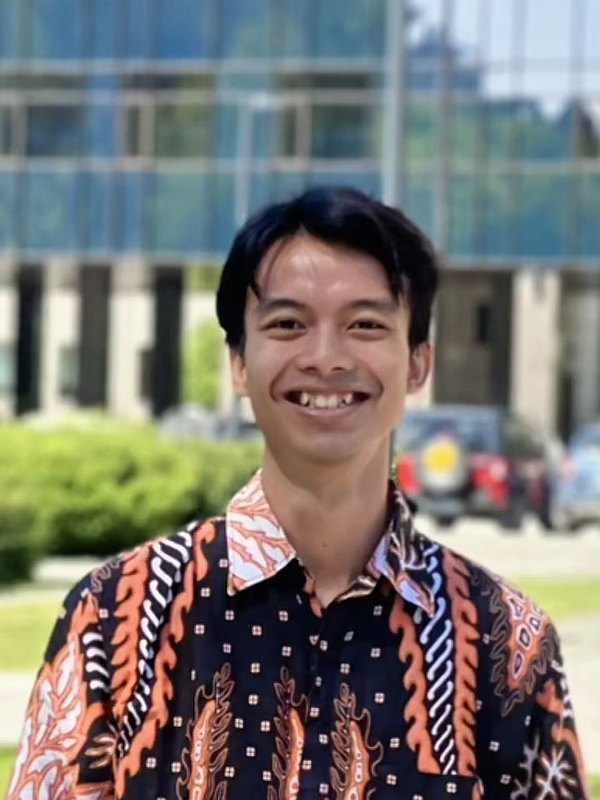

Hi, I'm Ruri.
I build memory chips that learn.
Researching RRAM devices at Korea University.
I'm Achyarul Mabruri, an M.S. researcher on the SK Global Scholarship. I work across the device-to-system stack: fabricating and characterising emerging memory devices, modelling them, and testing what they mean for neuromorphic and in-memory computing hardware. Outside the lab, I have been developing young people's leadership and soft skills since 2018.

From a single device to a working network, and the people behind it
Most memory papers stop at one device, and most AI papers assume perfect hardware. I work on the part in between, and I invest in people along the way.
Make and measure
Fabricate RRAM devices and characterise switching, variability and conduction with I–V and pulse measurements.
Model and simulate
Compact models, crossbar arrays with wire resistance, drift and ADCs, and chip-level estimates in NeuroSim.
Train and test
CNNs, spiking networks and reservoirs trained on measured device behaviour, to see what real hardware costs.
Lead and mentor
Leadership, soft-skill and career development for young people in Indonesia, plus scholarship mentoring.
Selected work
Phase-change heterostructure memory, from device to chip
A device-to-chip simulation pipeline for published multi-level phase-change heterostructure (PCH) memories.
Keeping phase-change-memory inference accurate for a year
Conductance drift slowly erases the weights stored in phase-change memory. I tested how to keep a network accurate for a year.
Physical reservoir computing with Ag/MoS₂/Au CBRAM
Can a discrete, multi-threshold switching device work as a reservoir node? A SPICE-level answer.
Leadership, youth and soft-skill development
Since 2018 I have helped young Indonesians build confidence, leadership and soft skills, and I still mentor students on scholarships and studying abroad.
Managing Director
Led Gerakan Tunas Bangsa Indonesia, a youth-development NGO reaching 100+ young people.
Teaching and career literacy
Indonesia Mengajar's Kemah Gerakan Mengajar (40 of 447 selected) and a 2025 community-engagement article on career literacy in schools.
International delegate
International Festival of Youth in Russia and the SEA–Europe Youth Partnership in Singapore.
Let's build something together.
Open to research collaborations, fully funded PhD positions and R&D roles, especially in emerging memory devices, nanoelectronics and neuromorphic hardware, and always happy to support youth leadership, mentoring and soft-skill development.